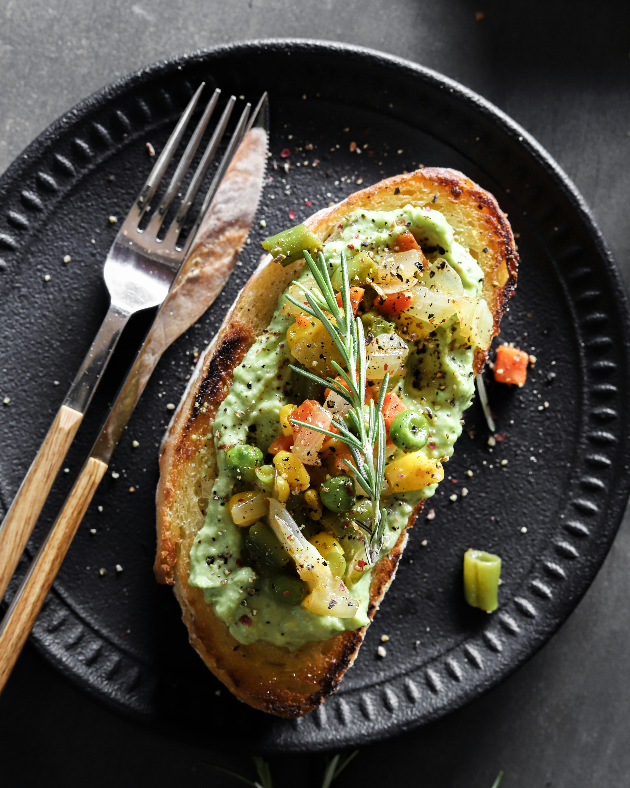

Avocado Toast
A healthy and trendy breakfast option: mashed avocado on toasted bread, topped with your favorite seasonings and garnishes.
Ingredients: Avocado, bread, olive oil, lemon, salt, pepper.
Instructions: Toast the bread, mash the avocado, and spread it on the toast. Season and garnish as desired.
Back to Breakfast Recipes